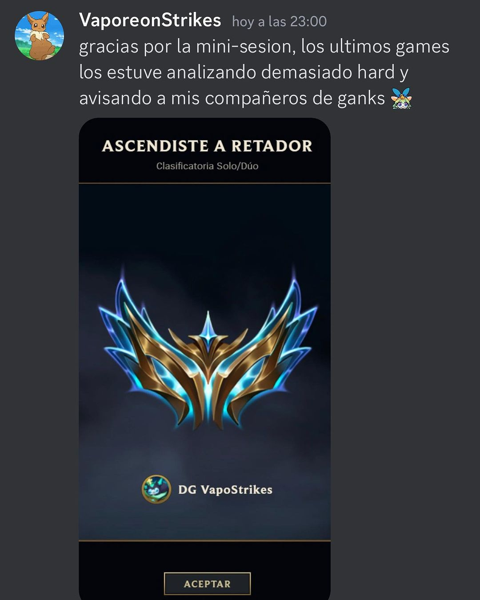
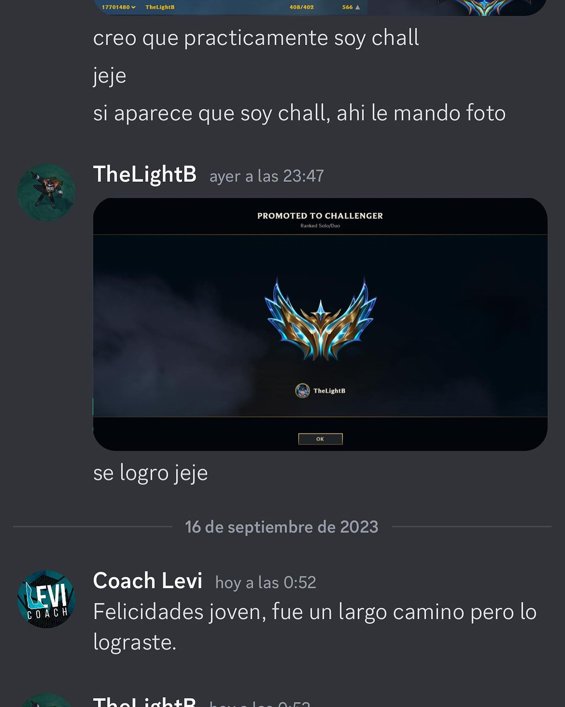

Resultados con nombre y captura
Todos publicados en titanscoaching.cl. Nada editado, nada inventado.

De Diamante a Retador junto a Titans, en el carril de la jungla.
Sorien · Top 1 de LAN, llego a profesional
Fuente: VSL y pagina de jungla de titanscoaching.cl

"Pude llegar a Challenger con Yone y Akali top, lo mejor es que tambien me sirvieron en Mid y estaba estancado en Maestro"
Vaporeon · Top Challenger LAS
Cita: pagina del Acelerador · captura: VSL de titanscoaching.cl

Paso de Diamante 2 a Challenger con el mismo sistema, dejando atras temporadas de estancamiento.
Light (Brandon) · Challenger
Cita: pagina del Acelerador · captura: VSL de titanscoaching.cl